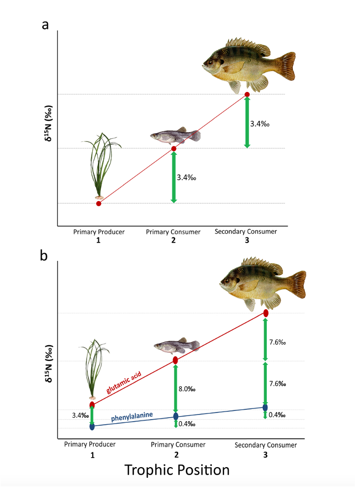

Compound specific stable isotope analysis is a novel methodology with exciting implications for determining the stable isotope values at the base of a food web. In this blog post I will explain what this method is, and why it is helpful.
Traditional “bulk” stable isotope analysis is an average of all the isotopes of interest in a sample, so the values returned during analysis are either the average carbon signature or the average nitrogen signature, depending on which isotopes you are interested in. This is a great method to determine which food sources an organism is most heavily relying on, but there are also some challenges with this form of analysis, such as something called the “trophic discrimination factor”. When we are specifically talking about nitrogen, every time an organism eats something, the average stable isotope value gets a little bit larger because of the metabolic process required for the organism to use the energy from the food source, this is called “enrichment”. Because of this, organisms at high trophic levels are highly enriched, while primary producers are not very enriched. Figure a in the below image visually describes this relationship.

Figure b in the above image shows what makes compound specific stable isotope analysis so special. In a tissue sample, nitrogen is stored in amino acids, the building blocks of proteins. Bulk stable isotope looks at every single amino acids, thus assuming that they all behave the same, however, scientists discovered that during metabolism, different amino acids actually act differently. Popp et al (2007) described two distinct groups of amino acids, source and trophic amino acids, which the entire theory of compound specific isotope analysis relies upon. Trophic amino acids behave much like bulk samples do, and are enriched between every trophic transfer. Source amino acids however, change very little between transfer. Glutamic acid is a commonly used trophic amino acid and phenylalanine is a commonly used source amino acid, and this relationship is observable in the above image in figure b.
So how do we use this property of amino acids to further our understanding of ecosystems?
Since we know the stable isotope signature of source amino acids are pretty much the exact same as the signatures at the base of the food web, we no longer need to worry about the trophic discrimination factor, and this gets rid of a lot of uncertainty. The trophic discrimination factor is difficult to accuratley estimate and so any results that rely on these estimations may therefore be unreliable. With compound specific stable isotope analysis it is possible to make more accurate estimation of trophic position and it’s also possible to figure out what the primary producer at the base of a food web is, since each primary producer has a unique signature that matches the source amino acid signature of the consumer. For example, by testing a consumer like a marine mammal or high trophic level fish species, you could figure out if sea grass or ice algae are more important in that food web.
What are the downsides of this method?
Since this method can offer some exciting new information, why is everyone not switching to this form of analysis? Unfortunately, compound specific isotope analysis is much more time intensive than traditional bulk isotope analysis and much more expensive. The process of separating the individual amino acids from a sample can take weeks of laboratory prep, as opposed to bulk analysis which is very fast, and processing a large number of samples is an attainable goal. Because the lab demand is so much higher, there is also a greater expense in the materials that are being consumed, and the time of any technicians working on samples.